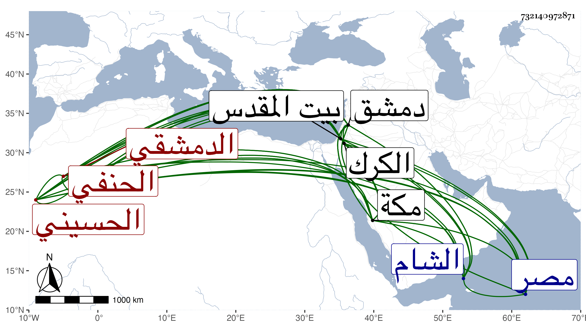

0902Sakhawi.DawLamic.ITO20230111-ara1.EIS1600.732140972871
Biography ID: 732140972871
992
علي بن محمد بن أبي بكر بن علي بن إبراهيم بن علي بن عدنان بن جعفر ابن محمد بن عدنان العلاء أبو الحسن بن ناصر الدين بن العماد بن العلاء الحسيني الدمشقي الحنفي سبط البرهان الباعوني ، أمه خديجة العثمانية ونقيب الأشراف بالشام كان كأبيه وجده ويعرف بابن نقيب الأشراف . ولد في شوال سنة اثنتين وخمسين وثمانمائة بدمشق ونشأ فحفظ القرآن والمختار والألفيتين وجمع الجوامع وغيرها وعرض على حميد الدين وحسام الدين وغيرهما من الحنفية وغيرهم وأخذ في الفقه عن الشرف بن عيد ومولى حاجي والعز بن الحمراء والشمس البخاري وعنه أخذ أصول الفقه وأذن له في التدريس والإفتاء وأخذ العربية عن الشهاب الزرعي والطب عن حكيم الدين الشيرازي والمولى قطب الدين السمرقندي وعرف بمزيد الذكاء وتميز في العربية وبعض العقليات وشارك في الفقه بل أتقن الطب مع ثروة زائدة فيما قيل ورياسة وحشمة وحسن شكالة ورونق كلام وتواضع وعقل تام وأدب وملاحظة في تكمله للقواعد وإنصافه في المباحث وقد تلقى عن أبيه نقابة الأشراف بدمشق وتدريس الريحانية ونظرها وتدريس المقدمية وغير ذلك ثم صرف عن النقابة بالسيد إبراهيم بن القبيباتي بل أشيع أن الأشرف قايتباي خطبه لقضاء الحنفية بمصر بعد شيخه ابن عيد فأبى ولكنه لم يفصح لي بذلك حين اجتماعي به عقلا خوفا من أن يكون ذلك باعثا على إلزامه للطمع فيه بل قال لي أنه كتب شيئا في أصول الفقه وحاشية على ألفية النحو ، وبلغني أنه امتدح البرهان بن ظهيرة بقصيدة فائقة ، وقد كثر اجتماعنا بمكة في سنة ثلاث وتسعين سيما حين أيام الختوم عندنا وكان يبالغ في التحرك لما يسمعه في تلك المجالس تصنيفا وتقريرا يقول ربما استشكل أو اعترض بما يكون في الكلام أو التقرير ما يدفعه ولو وفقت وسلكت اللائق لتأنيت أو نحو هذا مع إكثاره التأسف على عدم الملازمة لاشتغاله بالتوعك في معظم السنة وطالع من تصانيفي جملة كالجواهر والدرر وشرح الألفية وارتقاء الغرف والذيل على دول الإسلام ومناقب العباس وما لا ينحصر وكتب لي بخطه من نظمه :
| وقال الناس لما قل علم | وحفاظ الحديث لنا وراوي |
| أفي ذا العصر ترتحل المطايا | فقلت نعم إلى الحبر السخاوي |
وهو ممن جاور بمكة سنين متوالية متصلة بالسنة المذكورة ثم رجع في موسمها معرضا عن بلده لكثرة ما يطرقها من وارد ويخرقها من اختلاف المقاصد فتوجه إلى الكرك ثم ارتفق إلى بلد الخليل فلم ير راحة فيهما لمزيد تخيله وقبض يده فتحول إلى القدس فدام به ثم رجع إلى بلده والثناء عليه مستفيض وأظنه يتعانى التجارة .
